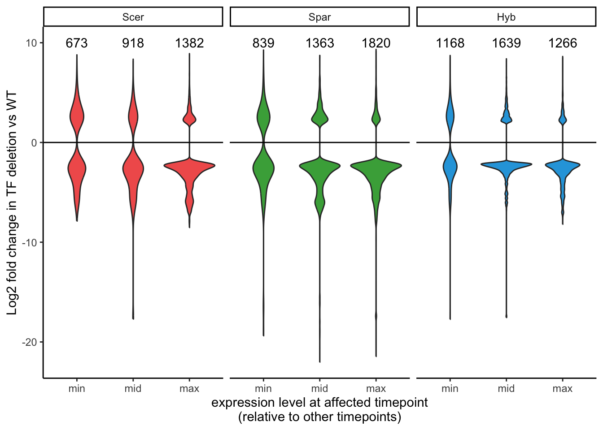
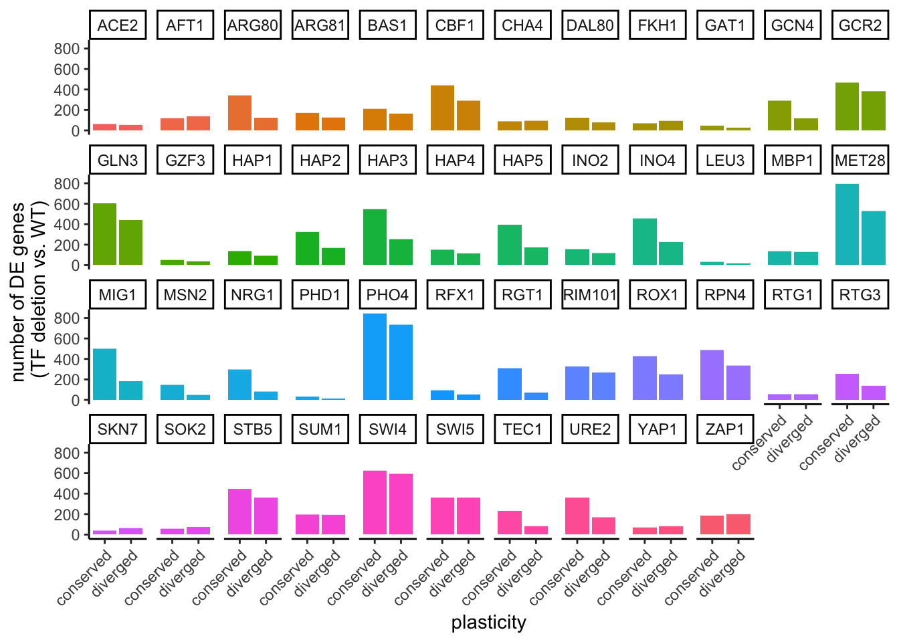
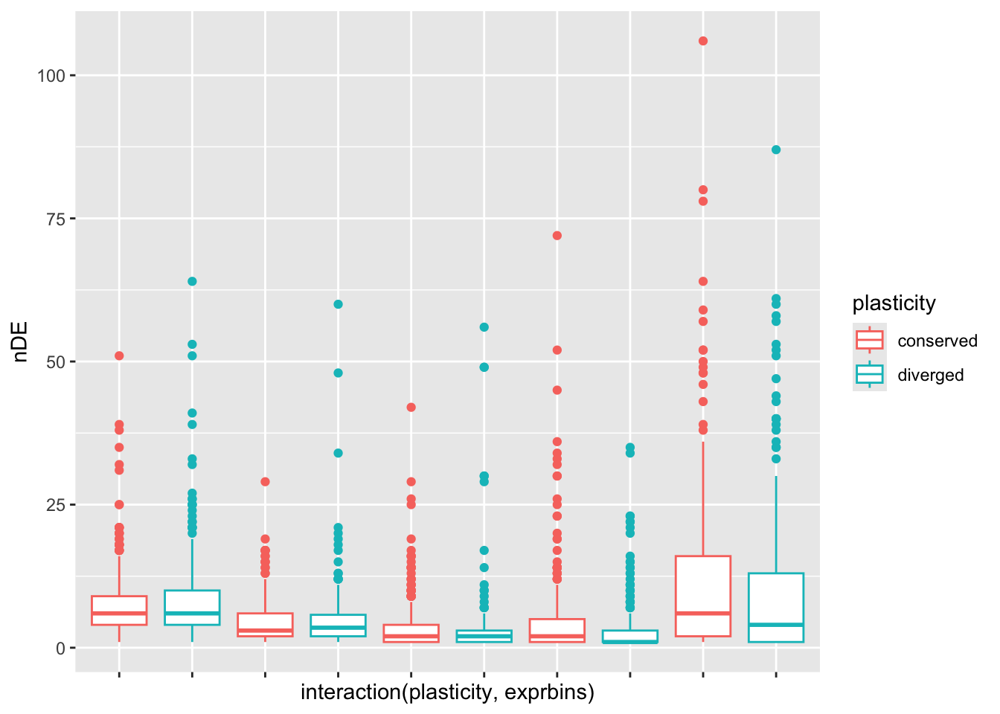

load("data_files/GeneDataFrame.RData")
load("data_files/DESeq2.RData")
source("utils.R")
sapply(c("dplyr", "readr", "tidyr", "purrr", "ggplot2", "ggpubr", "matrixStats"), require, character.only=TRUE)## dplyr readr tidyr purrr ggplot2 ggpubr matrixStats
## TRUE TRUE TRUE TRUE TRUE TRUE TRUEp_thresh <- 0.05 # because DESeq2 already corrected for FDR with alpha = 0.05
eff_thresh <- 2Because we see a stronger hybrid correlation to one parent or the other even when both correlations are above 0.8, we’re going to assign every gene a “dominant” parent by whether cor_cer or cor_par is greater. This might or might not be an important distinction later on, but it’s one we can make.
sum(genedf$cor_cer == genedf$cor_par, na.rm = TRUE)## [1] 0genedf$dominant <- if_else(genedf$cor_cer > genedf$cor_par,
true = "cer", false = "par")
genedf |> filter(cor_cer > 0.8 | cor_par > 0.8) |>
select(dominant) |> table()## dominant
## cer par
## 2283 2388No correlations are equal, so we don’t have to worry about ambiguous dominance. The incidence of Scer vs Spar dominance is pretty evenly split between genes..
genedf |> filter(cor_cer > 0.8 | cor_par > 0.8) |>
select(dominant, conservation) |> table()## conservation
## dominant conserved Hyb Scer ScerHyb ScerSpar Spar SparHyb unresponsive
## cer 193 107 83 161 4 22 60 1653
## par 203 120 44 124 4 35 68 1790…and conservation categories. Slight bias for Scer/ScerHyb to be dominant when it’s a gene that isn’t responsive in Spar and vice-versa for Spar/SparHyb.
Now we’ll check first how often the DE gene is in the dominant organism
sigdf <- TFdeldf |> filter(abs(lfc) > eff_thresh &
padj < p_thresh)
genedf$nScer <- map(genedf$gene_name, \(g) {
filter(sigdf, organism == "cer" & gene_name == g) |>
nrow()
}) |> unlist()
genedf$nSpar <- map(genedf$gene_name, \(g) {
filter(sigdf, organism == "par" & gene_name == g) |>
nrow()
}) |> unlist()
genedf$nHyb <- map(genedf$gene_name, \(g) {
filter(sigdf, organism == "hyb" &
allele == "hyb" & gene_name == g) |>
nrow()
}) |> unlist()
genedf$nHyc <- map(genedf$gene_name, \(g) {
filter(sigdf, organism == "hyb" &
allele == "cer" & gene_name == g) |>
nrow()
}) |> unlist()
genedf$nHyp <- map(genedf$gene_name, \(g) {
filter(sigdf, organism == "hyb" &
allele == "par" & gene_name == g) |>
nrow()
}) |> unlist()How many effects are in dominant versus recessive? i.e. if “cer” is dominant, how many are Scer/Hyc?
plotdf <- genedf |> filter(cor_cer > 0.8 | cor_par > 0.8 &
!is.na(dominant)) |>
select(dominant, nScer, nSpar, nHyc, nHyp, conservation) |>
drop_na()
plotdf$nDomParents <- if_else(plotdf$dominant == "cer",
true = plotdf$nScer,
false = plotdf$nSpar)
plotdf$nDomHybrid <- if_else(plotdf$dominant == "cer",
true = plotdf$nHyc,
false = plotdf$nHyp)
plotdf$nRecParents <- if_else(plotdf$dominant == "cer",
true = plotdf$nSpar,
false = plotdf$nScer)
plotdf$nRecHybrid <- if_else(plotdf$dominant == "cer",
true = plotdf$nHyp,
false = plotdf$nHyc)
plotdf0 <- plotdf |> select(nDomParents, nDomHybrid,
nRecParents, nRecHybrid) |> colSums()
plotdf0## nDomParents nDomHybrid nRecParents nRecHybrid
## 3234 4474 3023 41921 - pbinom(q = plotdf0["nDomParents"], size = plotdf0["nDomParents"] +
plotdf0["nRecParents"], prob = 0.5)## nDomParents
## 0.0036774611 - pbinom(q = plotdf0["nDomHybrid"], size = plotdf0["nDomHybrid"] +
plotdf0["nRecHybrid"], prob = 0.5)## nDomHybrid
## 0.001181848Is this more or less apparent in the LowN responsive genes?
plotdf0 <- plotdf |> filter(conservation != "unresponsive") |>
select(nDomParents, nDomHybrid,
nRecParents, nRecHybrid) |> colSums()
plotdf0## nDomParents nDomHybrid nRecParents nRecHybrid
## 1257 1904 1203 1722About the same.
Does one gene that has multiple effects tend to have fold changes from all effects in the same direction?
plotdf <- sigdf |> filter(organism == allele) |>
group_by(gene_name, organism, allele) |>
summarise(nUp = sum(sign(lfc) == 1),
nDown = sum(sign(lfc) == -1))## `summarise()` has grouped output by 'gene_name', 'organism'. You can override using the `.groups`
## argument.p_down <- ggplot(plotdf, aes(x = factor(nUp + nDown), y = nDown)) +
geom_boxplot(aes(color = organism)) +
geom_abline(slope = 0.5, intercept = 0) +
geom_abline(slope = 1, intercept = 0, color = "gold") +
theme_classic() +
theme(legend.position = "none") +
scale_color_discrete(limits = c("cer", "par", "hyb"),
type = c(conservation_colordf$value[conservation_colordf$limits == "Scer"],
conservation_colordf$value[conservation_colordf$limits == "Spar"],
conservation_colordf$value[conservation_colordf$limits == "Hyb"])) +
facet_wrap(~factor(organism, levels = c("cer", "par", "hyb"),
labels = c("Scer", "Spar", "Hyb"))) +
xlab("number of TF knockout effects per gene")
p_downp_up <- ggplot(plotdf, aes(x = factor(nUp + nDown), y = nUp)) +
geom_boxplot(aes(color = organism)) +
geom_abline(slope = 0.5, intercept = 0) +
geom_abline(slope = 1, intercept = 0, color = "gold") +
theme_classic() +
theme(legend.position = "none") +
scale_color_discrete(limits = c("cer", "par", "hyb"),
type = c(conservation_colordf$value[conservation_colordf$limits == "Scer"],
conservation_colordf$value[conservation_colordf$limits == "Spar"],
conservation_colordf$value[conservation_colordf$limits == "Hyb"])) +
facet_wrap(~factor(organism, levels = c("cer", "par", "hyb"),
labels = c("Scer", "Spar", "Hyb"))) +
xlab("number of TF knockout effects per gene")
p_upYes when they’re negative effects, no when they’re positive.
for the paper
pdf("../Umich_Dissertation/chapters/figures/Networks/sameDirectionBoxplots.pdf", width = 12, height = 4)
ggarrange(p_up, p_down, nrow = 2, ncol = 1)
dev.off()## quartz_off_screen
## 2Answering two questions about variance: 1) Is the species (Scer, Spar, or Hyb) where the gene is more variable also more likely to have effect(s)? 2) Is the timepoint where the gene is affected likely to be the highest or lowest timepoint and if so, does the direction of affect go towards the mean expression?
Both of these questions require us to collect 3 new columns for each organism: var, minTP, and maxTP, using collapsed. Easier to make a new df where there’s one row for each gene in each of the three yeasts:
triodf <- expand_grid(gene_name = genedf$gene_name,
organism = c("cer", "par", "hyb"))
triodf$var<- map2(triodf$gene_name, triodf$organism, \(g, o) {
expr_vec <- filter(collapsed, organism == o &
allele == o &
gene_name == g) |>
select(mean_expr) |> pull()
return(var(expr_vec))
}) |> unlist()
triodf$mean <- map2(triodf$gene_name, triodf$organism, \(g, o) {
expr_vec <- filter(collapsed, organism == o &
allele == o &
gene_name == g) |>
select(mean_expr) |> pull()
return(mean(expr_vec))
}) |> unlist()
triodf$maxTP <- map2(triodf$gene_name, triodf$organism, \(g, o) {
exprdf <- filter(collapsed, organism == o &
allele == o &
gene_name == g) |>
select(mean_expr, time_point_num)
max_expr <- max(exprdf$mean_expr)
max_tp <- exprdf$time_point_num[exprdf$mean_expr == max_expr] |>
purrr::reduce(.f = paste(sep = "_"))
return(max_tp)
}) |> unlist()
triodf$minTP <- map2(triodf$gene_name, triodf$organism, \(g, o) {
exprdf <- filter(collapsed, organism == o &
allele == o &
gene_name == g) |>
select(mean_expr, time_point_num)
min_expr <- min(exprdf$mean_expr)
min_tp <- exprdf$time_point_num[exprdf$mean_expr == min_expr] |> purrr::reduce(.f = paste(sep = "_"))
return(min_tp)
}) |> unlist()
triodf$disp <- if_else(triodf$mean != 0,
true = triodf$var/triodf$mean,
false = triodf$var)plotdf <- triodf |> select(gene_name, organism, disp) |>
pivot_wider(id_cols = "gene_name",
names_from = "organism",
values_from = "disp",
names_prefix = "disp_") |>
left_join(y = select(genedf, gene_name, nScer, nSpar),
by = "gene_name")
plotdf$higherDisp <- if_else(plotdf$disp_cer > plotdf$disp_par,
true = "cer", false = "par")
plotdf$nHigher <- if_else(plotdf$higherDisp == "cer",
true = plotdf$nScer, false = plotdf$nSpar)
plotdf$nLower <- if_else(plotdf$higherDisp == "cer",
true = plotdf$nSpar, false = plotdf$nScer)
plotdf |> select(nHigher, nLower) |> colSums()## nHigher nLower
## 3827 3168Slightly more from the higher variance gene, but not much.
Boxplot of three categories of effect: maxTP, minTP, midTP (not max or midTP) with the y-axis being the corresponding lfc, faceted by organism
plotdf <- left_join(x = filter(sigdf, organism == allele),
y = triodf,
by = c("gene_name", "organism"))
plotdf$maxTP <- map(plotdf$maxTP, \(tp) {
if (tp == 0) {
return("TP1")
}
if (tp == 60) {
return("TP2")
}
if (tp == 960) {
return("TP3")
}
}) |> unlist()
plotdf$minTP <- map(plotdf$minTP, \(tp) {
if (tp == 0) {
return("TP1")
}
if (tp == 60) {
return("TP2")
}
if (tp == 960) {
return("TP3")
}
}) |> unlist()
plotdf$tp <- map(c(1:nrow(plotdf)), \(i) {
maxtp <- plotdf$maxTP[i]
mintp <- plotdf$minTP[i]
tp <- plotdf$timepoint[i]
if (tp == maxtp) {
return("max")
}
if (tp == mintp) {
return("min")
}
else {
return("mid")
}
}) |> unlist()
countdf <- plotdf |> group_by(tp, organism) |>
summarise(n = n())## `summarise()` has grouped output by 'tp'. You can override using the `.groups` argument.p <- ggplot(plotdf,
aes(x = factor(tp, levels = c("min", "mid", "max")),
y = lfc)) +
geom_violin(aes(fill = organism)) +
scale_fill_discrete(limits = c("cer", "par", "hyb"),
type = c(conservation_colordf$value[conservation_colordf$limits == "Scer"],
conservation_colordf$value[conservation_colordf$limits == "Spar"],
conservation_colordf$value[conservation_colordf$limits == "Hyb"])) +
geom_text(data = countdf,
aes(y = 10, x = tp, label = n)) +
facet_wrap(~factor(organism, levels = c("cer", "par", "hyb"),
labels = c("Scer", "Spar", "Hyb"))) +
geom_hline(yintercept = 0) +
theme_classic() +
xlab("expression level at affected timepoint\n(relative to other timepoints)") +
ylab("Log2 fold change in TF deletion vs WT") +
theme(legend.position = "none")
p
For paper figure:
pdf("../Umich_Dissertation/chapters/figures/Networks/varianceViolins.pdf", width = 5, height = 3)
p
dev.off()## quartz_off_screen
## 2What about just the LowN responsive genes?
lowN_responsive_genes <- genedf |>
filter(!is_conserved_unresponsive) |>
select(gene_name) |> pull()
countdf <- plotdf |> filter(gene_name %in% lowN_responsive_genes) |>
group_by(tp, organism) |>
summarise(n = n())## `summarise()` has grouped output by 'tp'. You can override using the `.groups` argument.p <- ggplot(filter(plotdf, gene_name %in% lowN_responsive_genes),
aes(x = factor(tp, levels = c("min", "mid", "max")),
y = lfc)) +
geom_violin(aes(fill = organism)) +
geom_text(data = countdf,
aes(y = 10, x = tp, label = n)) +
facet_wrap(~organism) +
geom_hline(yintercept = 0) +
theme_classic() +
xlab("expression level at affected timepoint\n(relative to other timepoints)") +
ylab("Log2 fold change in TF deletion vs WT")
pSimilar proportions. Spar doesn’t have quite as much bias towards -lfc at mid TP effects.
I could just lump all the TFdel samples into one category and compare it to WT. To do this I would want to first check if different TFdels tended to affect the same gene in the same way (i.e. same direction and same timepoint), which would be quite interesting.
# TODO: This might be a more intuitive way to create a plot that shows reduction in variation for the paper. But for now I'm using the above violin plots and calling it a day.Most TF effects are in conserved genes, true for every knockout with significant numbers of effects:
plotdf <- sigdf |>
filter(abs(lfc) > 1) |>
left_join(select(genedf, gene_name, cor_parents),
by = "gene_name") |>
mutate(plasticity = if_else(cor_parents > 0.8,
true = "conserved",
false = "diverged")) |>
group_by(gene_name, deletion, plasticity) |>
summarise(n = n()) |>
drop_na()## `summarise()` has grouped output by 'gene_name', 'deletion'. You can override using the `.groups`
## argument.ggplot(plotdf, aes(x = plasticity, y = n)) +
geom_bar(aes(fill = deletion), stat = "identity") +
facet_wrap(~deletion, nrow = 4) +
theme_classic() +
theme(legend.position = "none",
axis.text.x = element_text(angle = 45, hjust = 1, vjust = 1)) +
xlab("plasticity") +
ylab("number of DE genes \n(TF deletion vs. WT)")
But there are more conserved than diverged genes, is this just reflecting that bias?
plotdf0 <- plotdf |> group_by(plasticity) |>
summarise(n = sum(n))
countdf <- plotdf |> ungroup() |>
select(gene_name, plasticity) |>
unique() |>
group_by(plasticity) |>
summarise(nGroup = n())
plotdf0 <- left_join(plotdf0, countdf, by = "plasticity") |>
pivot_longer(cols = c("n", "nGroup"))
countdf <- plotdf0 |> group_by(name) |> summarise(nBars = sum(value))
plotdf0 <- left_join(plotdf0, countdf, by = "name")
p <- ggplot(plotdf0, aes(x = name, y = value/nBars)) +
geom_bar(aes(fill = plasticity),
position = "stack",
stat = "identity") +
theme_classic() +
scale_x_discrete(limits = c("n", "nGroup"),
labels = c("fractionOfTFEffects",
"fractionOfGenes")) +
theme(axis.text.x = element_text(angle = 90, hjust = 1, vjust = 0.5))
pConserved still have a disproportionately higher fraction of TF effects.
But conserved might have higher mean expression than diverged, and higher mean expression is more likely to have TF effects—What if we bin by mean expression level:
plotdf <- sigdf |>
left_join(select(genedf, gene_name, cor_parents),
by = "gene_name") |>
group_by(gene_name, cor_parents) |>
summarise(nDE = n()) |>
drop_na() |>
mutate(plasticity = if_else(cor_parents > 0.8,
true = "conserved",
false = "diverged"))## `summarise()` has grouped output by 'gene_name'. You can override using the `.groups` argument.meanexprdf <- collapsed |>
group_by(gene_name) |>
summarise(expr_level = mean(mean_expr, na.rm = TRUE))
plotdf <- left_join(plotdf, meanexprdf, by = "gene_name")
plotdf$exprbins <- cut_number(plotdf$expr_level, n = 5)
ggplot(plotdf, aes(x = interaction(plasticity, exprbins), y = nDE)) +
geom_boxplot(aes(color = plasticity)) +
theme(axis.text.x = element_blank()) In the very lowest expression bin, both conserved and diverged have very few effects. But in all other bins, conserved genes have more TF effects than diverged.
Scaling collapsed (keeping in case it’s useful):
scaledf <- collapsed |>
group_by(gene_name, organism, allele) |>
reframe(scaling_mean = mean(mean_expr),
scaling_scale = sd(mean_expr),
mean_expr = mean_expr,
time_point_num = time_point_num) |>
ungroup()
scaledf$scaled_expr <- (scaledf$mean_expr - scaledf$scaling_mean)/scaledf$scaling_scale
collapsed <- left_join(x = collapsed,
y = select(scaledf, gene_name, organism,
allele, time_point_num, scaled_expr),
by = c("gene_name", "organism",
"allele", "time_point_num"))